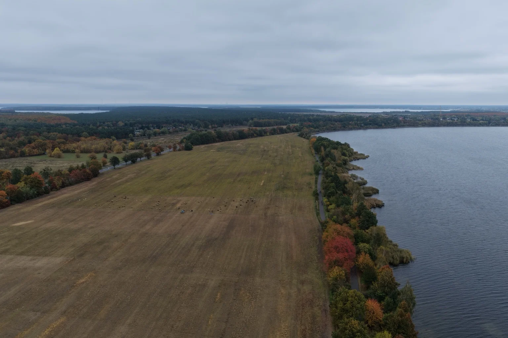
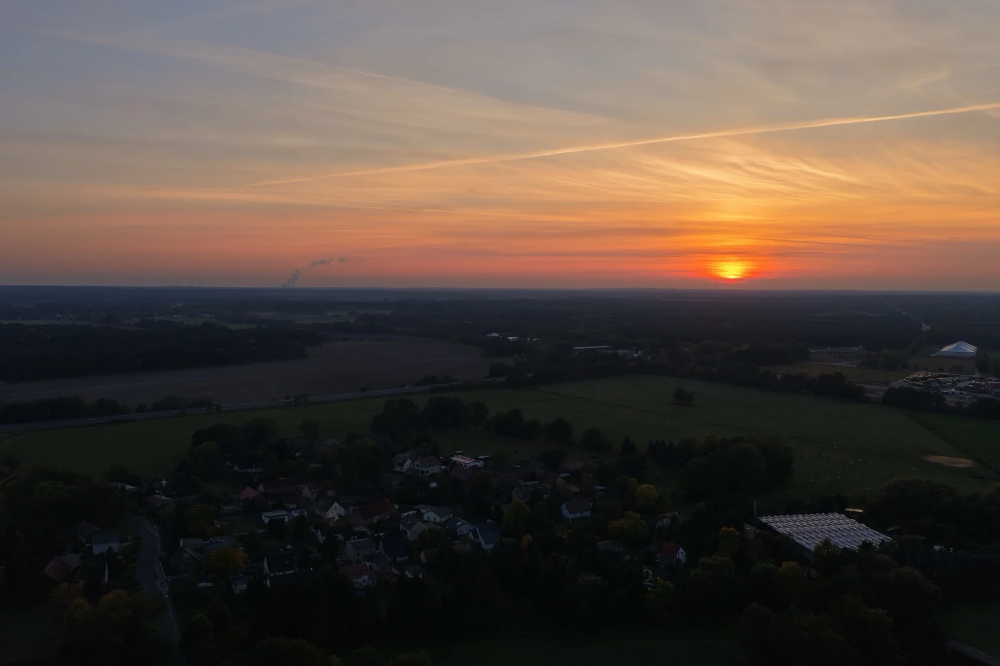
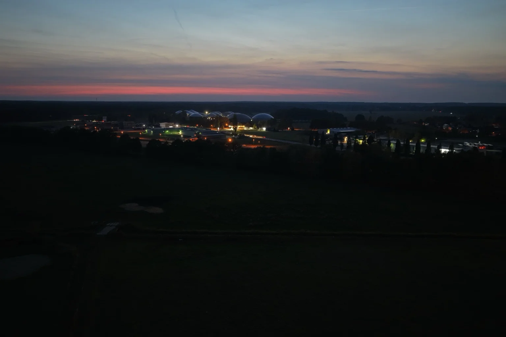
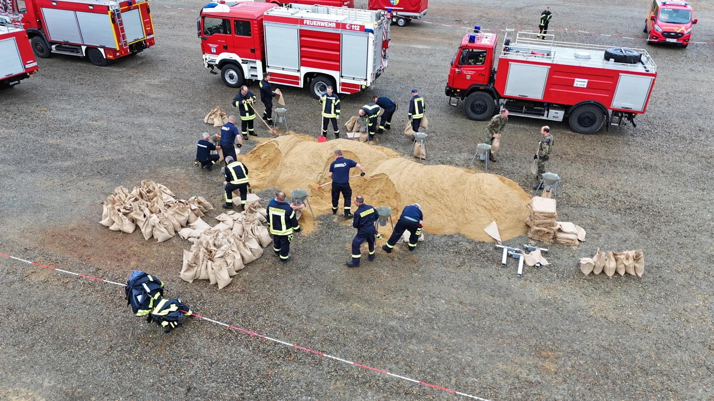
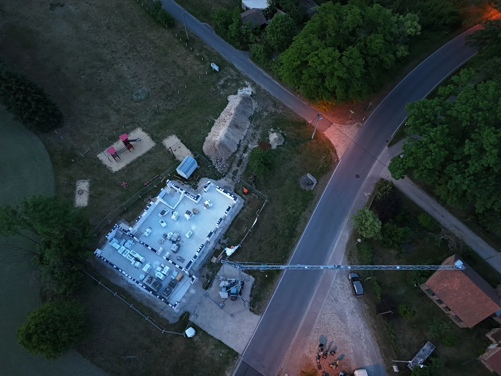
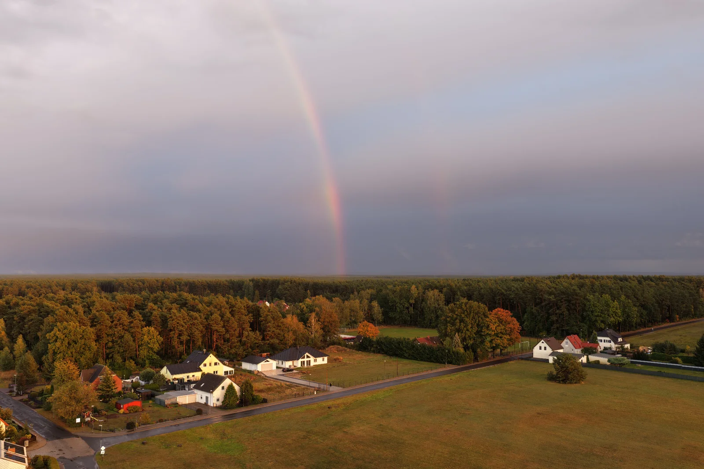
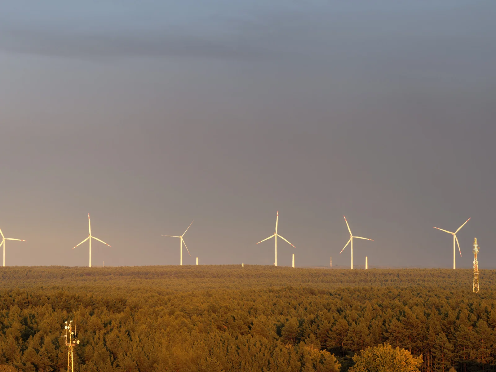
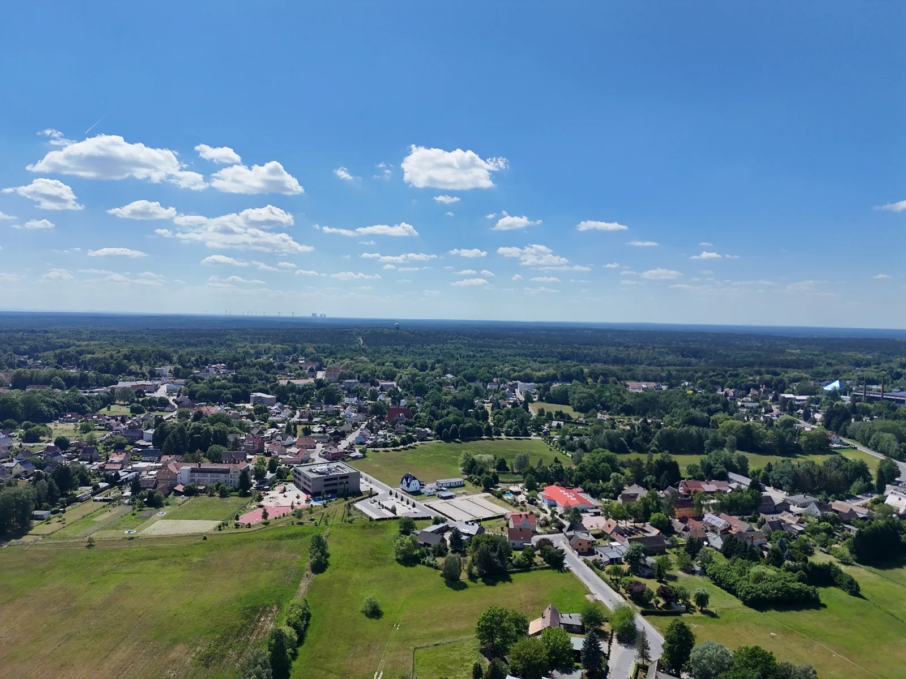

Unsere Region.
Meine Perspektive.
Hier bekommst du einen Eindruck davon, was ich am Fliegen liebe – und wie Bilder aus der Luft Landschaften, Abläufe und Bauvorhaben verständlich machen.
Wasser, Wald
und ein freier Kopf.
Die Kamera hebt ab – und vertraute Landschaften werden zu Mustern aus Farben, Linien und Licht. Diese Aufnahmen stehen für die ruhigen Momente, die mich immer wieder nach draußen ziehen.



Der Abend war
noch nicht zu Ende.
Erst warmes Licht über den Wäldern, dann ein farbiger Himmel – und schließlich die Lichter der Stadt. An diesem Abend in Forst bin ich bis zum Einbruch der Dunkelheit geblieben.
Solche Momente lassen sich nicht auf Knopfdruck bestellen. Manchmal lohnt es sich, noch ein bisschen zu warten und genauer hinzuschauen.





Feuerwehr.
Bewegung.
Ein anderer Blick.
Bei der Übung der Brandschutzeinheit auf dem Flugplatz Neuhausen/Spree habe ich die Fahrzeuge und das Geschehen mit der DJI Air 3 begleitet. Besonders beeindruckend war es, die Bewegung der Fahrzeuge über die Landebahn seitlich mit der Kamera mitzugehen.
Die Fotos zeigen das Gelände und Teile der Übung. Sie geben einen Überblick, der vom Boden aus so nicht möglich ist – und machen das Zusammenspiel von Menschen, Fahrzeugen und Fläche sichtbar.



Aus Plänen
wird ein Gebäude.
Raumaufteilung, Außenbereiche und das Verhältnis zum Umfeld: Die Vogelperspektive macht einen Bauzustand im Zusammenhang sichtbar.
Mit wiederkehrenden Aufnahmen können solche Einblicke auch die Entwicklung eines Bauvorhabens begleiten. Die folgenden Bilder zeigen unterschiedliche Ansichten eines Rohbaus.



Für das Besondere
vor unserer Haustür.
Wetterwechsel, Wald und Orte im Abendlicht: Eine Auswahl weiterer eigener Aufnahmen. Jede davon beginnt mit Neugier auf die Perspektive.






„Technik wird spannend,
wenn sie eine Geschichte erzählt.“
Auch beim Feuerwehr-Pokallauf in Wolfshain habe ich Air 3 und Neo eingesetzt, um den Löschangriff nass aus unterschiedlichen Blickwinkeln zu filmen. Die Telekamera der Air 3 ermöglichte engere Bildausschnitte von einer seitlichen Position.
Was möchtest du
von oben sehen?
Ein Lieblingsort, dein Gebäude oder ein neues Projekt: Gemeinsam finden wir die Perspektive, die zu dir passt.